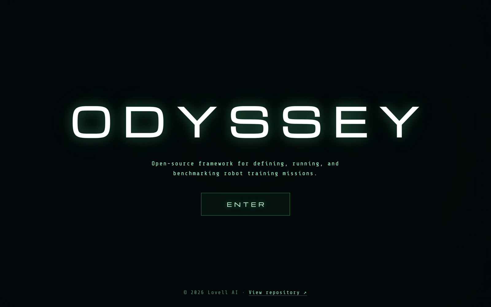

Most agents are frozen at birth. This one isn't.
Agents ship with a fixed set of skills. When they fail, a human reads the logs, edits a prompt, and redeploys — the agent never learns. evolving-robot is a small, honest proof of a different idea:
A 2D patrol robot runs a mission, notices where it did poorly, rewrites one of its own skills, and only keeps the change if it provably didn't break anything and improved its score. Otherwise it's rolled back — with the reason on record.
The closed loop
One cycle: run, score, commit, dream, gate, re-score. Every mutation is versioned like source code.
The three guardrails
The moment an agent can edit its own skills, you inherit a scary question: what stops it from writing something broken? Letting it self-edit is only sane because three open projects each solve one hard part. Full credit and thanks to their authors — this project exists to show how well they compose.
An agent can only improve if it is measured. odyssey defines, runs, and benchmarks robot missions — and its duck-typed TextGenerator / Runner / PlannedEvalRuntime seams let a REST-based Gemma brain and a 2D-sim runner slot in without forking anything. Every patrol ends in an honest success_rate — the exact signal the evolution loop turns on.
Thank you @SoyGema & Lovell AI · odyssey.dev · GitHub
A hallucinated reference, a name collision, a malformed file — any of these can quietly poison an agent. skill-map reads every skill, agent, and command, builds a graph of how they reference each other, and turns broken edits into hard errors. Before any self-edit lands, sm check must pass; failures go back to the model as feedback, or the edit is discarded.
Thank you @crystian · skill-map.ai · GitHubSelf-improvement without memory is just drift. agentvcs is version control built for agents: a commit pins code + goal + the trace of what the agent actually did, as one object. It gives the loop its two survival instincts — rollback(reason=…) when a change makes things worse, and crystallize to freeze a verified skill set into a trusted, replayable recipe.
github.com/EvolvingAgentsLabs/agentvcsOne model does everything over a plain HTTPS call — no GPU, no downloads. Native function-calling drives the robot's primitives; the same model rewrites the skills. Confirmed working on gemma-4-26b-a4b-it.
Flight log — every phase, verified
What the run produces
1f0315a9 [crystallized] freeze: verified patrol skill set 89d6ec5c [fluid] evolve(patrol-route): observe once 8d8abc76 [fluid] baseline: skills at success_rate=1.00 · rollbacks.jsonl ↩ reason: success_rate 0.40 < 1.00 baseline; revert patrol-route
[user] Patrol the facility: visit the Server Room, Emergency Exit, Supply Closet… [assistant] [training] warmup → COMPLETED [assistant] [evaluation] patrol-eval → COMPLETED {"success_rate": 1.0, "passed": true} [assistant] mission COMPLETED overall_grade=1.0
Run it yourself
The entire proof runs on a laptop with an API key. Two dependencies, one command for the full live loop:
python3.12 -m venv .venv && ./.venv/bin/pip install httpx websockets cp .env.example .env # add GEMINI_API_KEY ./.venv/bin/python scripts/evolve_live.py # the full loop, live
Open http://localhost:9092 to watch the robot patrol while it evolves.
View on GitHub ↗